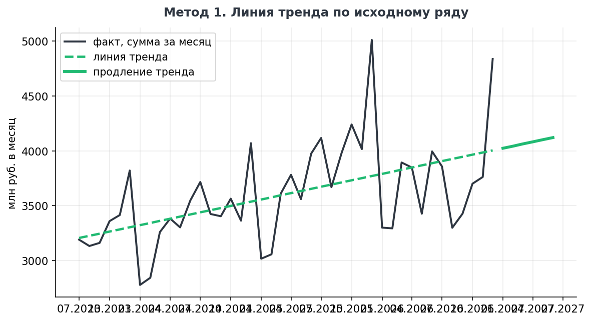
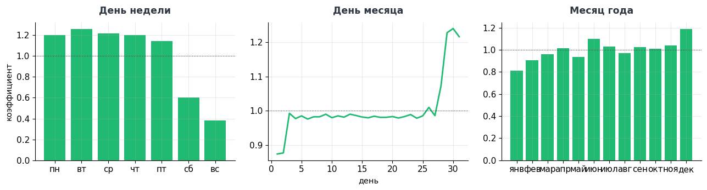
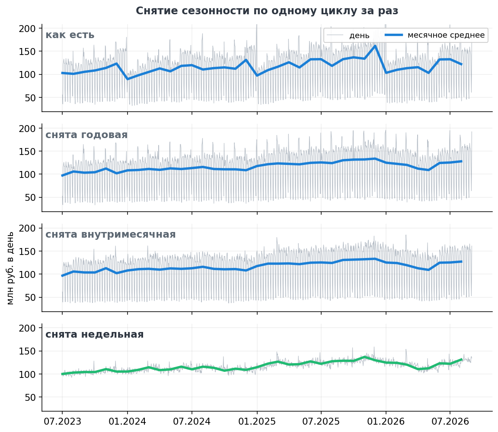
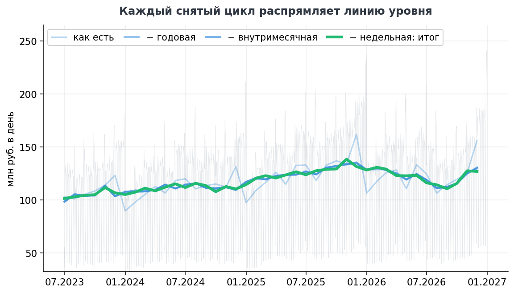
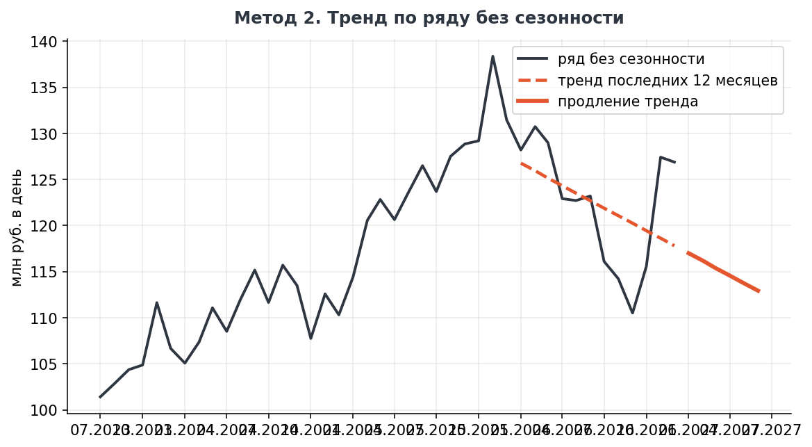
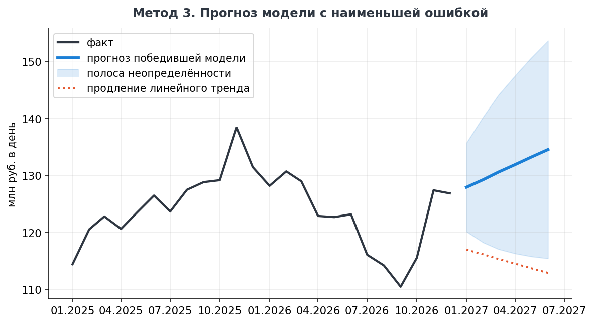

Один ряд данных, три способа посмотреть на него и три противоположных вывода. Какой из них верен, решает не выразительность графика, а измеренная ошибка прогноза.
Объём операций портфеля растёт или падает — и какому из ответов верить?
Данные — дневной ряд portfolio_operations_daily.csv: объём операций и их число за три с половиной года, 1 280 строк. Ряд заканчивается декабрём — так, как его видит руководитель, когда годовой отчёт готовится в январе. Тетрадь целиком — 3.4.3_анализ_отклонений.ipynb.
Месячные суммы и прямая по всей истории: наклон +19,5 млн рублей в месяц, около +6 % в год. Портфель растёт, продление тренда обещает рост и дальше. На этом месте отчёт обычно и заканчивается. Как строится сама прямая — в разделе «Регрессия» математических основ.

В ряде наложены три регулярных ритма: месяц года, начало и конец месяца, день недели. Пока они в данных, сезонный подъём читается как рост.

Коэффициент сезонности — отношение среднего значения в позиции к общему среднему; деление на коэффициент убирает ритм из ряда. Годовые коэффициенты считаются не к общему среднему, а к скользящему среднему за двенадцать месяцев: иначе при выраженном тренде поздние месяцы получают завышенный коэффициент просто потому, что они поздние. Полная процедура разложения — модель, три шага и порядок снятия ритмов — в разделе «Сезонность» математических основ.
Циклы снимаются по одному, от самого длинного к самому короткому. На каждой панели две линии: месячное среднее и прямая тренда за последние двенадцать месяцев. Окно тренда одно и то же на всех панелях — иначе сравнение было бы подтасовкой.

Тренд переворачивается на первом же шаге. На исходном ряде прямая идёт вверх, +1,7 млн рублей в день за месяц. После снятия годовой сезонности та же прямая за тот же период идёт вниз: −0,7. Дальше наклон почти не меняется — −0,8 и −0,8.
Причина в том, где заканчивается ряд. Отчёт готовится в январе, последние двенадцать месяцев идут от самого слабого сезонного месяца к самому сильному (коэффициент января 0,83, декабря — 1,19), и одна только годовая сезонность добавляет к наклону около трёх миллионов в день за месяц. Она перекрывает реальное снижение уровня с запасом — поэтому исходный ряд показывает рост там, где портфель снижается.
Внутримесячные и недельные колебания на наклон почти не влияют: внутри месяца они взаимно погашаются. Убирать их всё равно нужно, но не ради тренда, а ради чтения дневного ряда, на котором принимаются оперативные решения.

Две последние линии почти совпадают, и это содержательный результат, а не изъян расчёта: внутримесячные и недельные колебания внутри месяца взаимно погашаются, поэтому на месячный уровень они почти не влияют. Мешают они другому — чтению дневного ряда, а на нём принимаются оперативные решения. Уровень определяет годовая сезонность: до её снятия линия ныряет каждый январь, и вывод по двум соседним месяцам оказывается разговором о календаре, а не о портфеле.
После очистки тренд последнего года идёт вниз: −0,8 млн рублей в день за каждый месяц. Тот же ряд — противоположный вывод.

Прямая по фиксированному окну не знает ничего, кроме наклона, и не видит перелома. Проверка устроена иначе: из каждой точки последнего года строится прогноз на три месяца вперёд только по предшествующим данным, и он сравнивается с фактом.
| Модель | Средняя абсолютная ошибка, млн руб. в день |
|---|---|
| Сглаживание Холта | 6,46 |
| Сезонная наивная | 7,50 |
| Линейный тренд по 12 месяцам | 9,49 |
Побеждает сглаживание — единственная из трёх, которая реагирует на перелом. Её прогноз: просадка закончилась, ряд восстанавливается. Уравнения всех трёх моделей и устройство скользящей проверки — в разделе «Прогноз» математических основ.
В тетради кейса перед выбором победителя есть интерактивный шаг: ползунок передвигает точку старта по последнему году, из неё все три модели строят прогноз только по данным слева, и расхождение с фактом видно на глазах — вместе с ошибкой каждой модели на этом старте. Там же видно и честную оговорку: на дне разворота промахиваются все, поэтому модель выбирается по средней ошибке всех стартов.

| Взгляд | Метод | Вывод |
|---|---|---|
| Первый | тренд по исходному ряду | рост — сезонность принята за тренд |
| Второй | тренд по очищенному году | падение — прямая не видит перелома |
| Третий | модель с наименьшей ошибкой на отложенных периодах | просадка завершается, идёт восстановление |
Ни один из трёх не является истиной сам по себе: у третьего есть то, чего нет у первых двух, — измеренная ошибка. Форма вывода для доклада: «просадка началась одиннадцать месяцев назад, последние три месяца восстанавливаются; модель с наименьшей проверенной ошибкой ожидает выход на прежний уровень с такой-то полосой неопределённости».
Пять исправлений, все — из разряда тихих: код выглядел законченным.